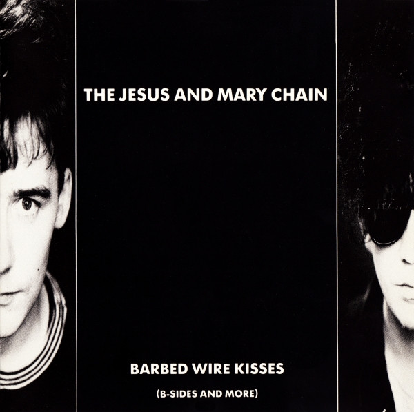

CD
Barbed Wire Kisses (B-Sides And More)
The Jesus And Mary Chain
Media: — · Sleeve: —
—
Personal
Discogs SuggestedCA$22.44
Discogs MedianCA$22.44
Discogs HighCA$22.44
- Physical Copy ID
- BB-CD-1582
- Year
- 1988
- Label
- Blanco Y Negro, Blanco Y Negro
- Catalog #
- 242331-2, 242 331-2
- Country
- Europe
- Genre / Style
- Rock · Alternative Rock, Indie Rock